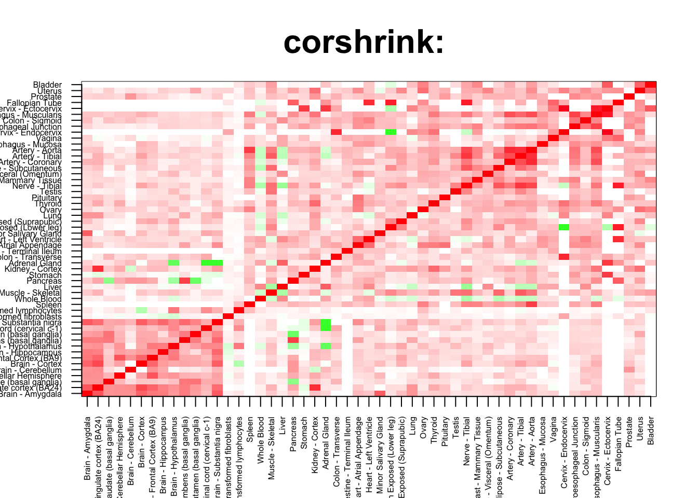
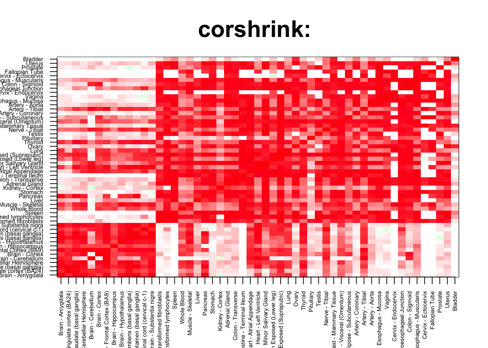
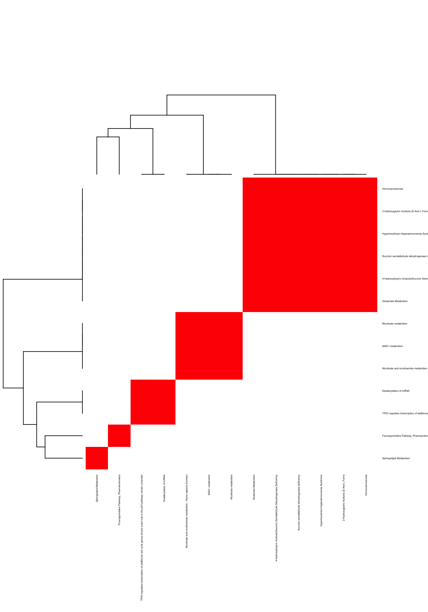
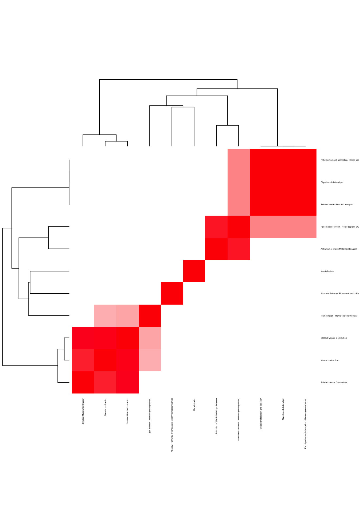

rm(list=ls())
corshrink_data <- get(load("../output/genewide_ash_out_tissue_mat.rda"))
cor_data <- get(load("../output/cor_tissues_non_ash_voom_pearson.rda"))common_samples <- get(load("../output/common_samples.rda"))
tissue_labels <- read.table(file = "../data/GTEX_V6/samples_id.txt")[,3]
#library(data.table)
#data <- data.frame(fread("../data/GTEX_V6/cis_gene_expression.txt"))
#matdata <- t(data[,-c(1,2)])
gene_names <- as.character(read.table(file = "../data/GTEX_V6/gene_names_GTEX_V6.txt")[,1])
gene_names_1 <- as.character(sapply(gene_names, function(x) return(strsplit(x, "[.]")[[1]][1])))
U <- unique(tissue_labels)tab <- array(0, dim(corshrink_data)[3])
artery_2_set <- match(c("Artery - Coronary", "Artery - Aorta", "Artery - Tibial"), U)
for(m in 1:dim(corshrink_data)[3]){
temp <- corshrink_data[artery_2_set, artery_2_set, m]
temp1 <- corshrink_data[order_index[-(1:13)], order_index[-(1:13)],m]
tab[m] <- median(temp[row(temp) > col(temp)]) - median(temp1[row(temp1) > col(temp1)])
}
ordering_high <- order(tab, decreasing = TRUE)[1:100]
ordering_low <- order(tab, decreasing = FALSE)[1:100]top_gene <- gene_names_1[ordering_high[1]]
col=c(rev(rgb(seq(1,0,length=1000),1,seq(1,0,length=1000))),
rgb(1,seq(1,0,length=1000),seq(1,0,length=1000)))
image(as.matrix(corshrink_data[order_index,order_index, ordering_high[1]]),
col=col, main=paste0("corshrink: "), cex.main=2,
xaxt = "n", yaxt = "n", zlim=c(-1,1))
axis(1, at = seq(0, 1, length.out = 53), labels = U[order_index], las=2, cex.axis = 0.5)
axis(2, at = seq(0, 1, length.out = 53), labels = U[order_index], las=2, cex.axis = 0.5)
bottom_gene <- gene_names_1[ordering_low[1]]
col=c(rev(rgb(seq(1,0,length=1000),1,seq(1,0,length=1000))),
rgb(1,seq(1,0,length=1000),seq(1,0,length=1000)))
image(as.matrix(corshrink_data[order_index,order_index, ordering_low[1]]),
col=col, main=paste0("corshrink: "), cex.main=2,
xaxt = "n", yaxt = "n", zlim=c(-1,1))
axis(1, at = seq(0, 1, length.out = 53), labels = U[order_index], las=2, cex.axis = 0.5)
axis(2, at = seq(0, 1, length.out = 53), labels = U[order_index], las=2, cex.axis = 0.5)
high_artery_2_genes <- gene_names_1[ordering_high]
low_artery_2_genes <- gene_names_1[ordering_low]
write.table(cbind.data.frame(high_artery_2_genes), quote = FALSE, file = "../utilities/artery_2/high_artery_2.txt", row.names = FALSE, col.names = FALSE)
write.table(cbind.data.frame(low_artery_2_genes), quote = FALSE, file = "../utilities/artery_2/low_artery_2.txt", row.names = FALSE, col.names = FALSE)tab <- read.delim("../utilities/artery_2/pathway_high.tab")
head(cbind.data.frame(tab$pathway, tab$q.value), 10)## tab$pathway
## 1 NAD+ metabolism
## 2 Sphingolipid Metabolism
## 3 Nicotinate metabolism
## 4 TP53 regulates transcription of additional cell cycle genes whose exact role in the p53 pathway remain uncertain
## 5 Deadenylation of mRNA
## 6 2-Hydroxyglutric Aciduria (D And L Form)
## 7 Homocarnosinosis
## 8 Hyperinsulinism-Hyperammonemia Syndrome
## 9 Succinic semialdehyde dehydrogenase deficiency
## 10 4-Hydroxybutyric Aciduria/Succinic Semialdehyde Dehydrogenase Deficiency
## tab$q.value
## 1 0.08412981
## 2 0.08412981
## 3 0.08412981
## 4 0.08412981
## 5 0.08412981
## 6 0.08412981
## 7 0.08412981
## 8 0.08412981
## 9 0.08412981
## 10 0.08412981pathway2 <- read.delim("../utilities/artery_2/pathway_high.tab")
if(length(which(pathway2$q.value < 0.05)) > 2){
pathway2 <- pathway2[which(pathway2$q.value < 0.05),]
}
maxpath = 75
pathway <- pathway2[1:min(maxpath, dim(pathway2)[1]), ]
ensembl_genes <- pathway$members_input_overlap
pathway_list_genes <- sapply(ensembl_genes, function(x) return(strsplit(as.character(x), "; ")))
all_genes <- Reduce(union, pathway_list_genes)
pathway_mat <- matrix(0, length(pathway_list_genes), length(all_genes))
for(l in 1:dim(pathway_mat)[1]){
pathway_mat[l, match(pathway_list_genes[[l]], all_genes)] <- 1
}
pathway_bimat <- (pathway_mat)%*%t(pathway_mat)
pathway_bimat_prop <- diag(1/sqrt(diag(pathway_bimat)), dim(pathway_bimat)[1]) %*% pathway_bimat %*% diag(1/sqrt(diag(pathway_bimat)), dim(pathway_bimat)[1])
col=c(rev(rgb(seq(1,0,length=1000),1,seq(1,0,length=1000))),
rgb(1,seq(1,0,length=1000),seq(1,0,length=1000)))
heatmap(pathway_bimat_prop, labRow = pathway$pathway, labCol = pathway$pathway, cexRow = 0.3, cexCol = 0.3, col = col, zlim = c(-1,1),
scale = "none", margins = c(5, 5))
tab <- read.delim("../utilities/artery_2/GO_high.tab")
head(cbind.data.frame(tab$term_name, tab$q.value), 10)## tab$term_name
## 1 putrescine biosynthetic process from ornithine
## 2 cytoplasm
## 3 putrescine biosynthetic process
## 4 cytoplasmic part
## 5 putrescine metabolic process
## 6 ornithine metabolic process
## 7 membrane raft assembly
## 8 lactation
## 9 regulation of peroxisome proliferator activated receptor signaling pathway
## 10 intracellular part
## tab$q.value
## 1 0.01784383
## 2 0.00746979
## 3 0.04186863
## 4 0.01148499
## 5 0.06170329
## 6 0.05808754
## 7 0.06186228
## 8 0.10395983
## 9 0.06763945
## 10 0.09064240tab <- read.delim("../utilities/artery_2/pathway_low.tab")
head(cbind.data.frame(tab$pathway, tab$q.value), 10)## tab$pathway tab$q.value
## 1 Striated Muscle Contraction 0.0001920955
## 2 Striated Muscle Contraction 0.0053154118
## 3 Muscle contraction 0.0053154118
## 4 Keratinization 0.0070530818
## 5 Abacavir Pathway, Pharmacokinetics/Pharmacodynamics 0.0082286796
## 6 Digestion of dietary lipid 0.0101878811
## 7 Pancreatic secretion - Homo sapiens (human) 0.0228582806
## 8 Activation of Matrix Metalloproteinases 0.0254167456
## 9 Fat digestion and absorption - Homo sapiens (human) 0.0385688481
## 10 Retinoid metabolism and transport 0.0385688481pathway2 <- read.delim("../utilities/artery_2/pathway_low.tab")
if(length(which(pathway2$q.value < 0.05)) > 2){
pathway2 <- pathway2[which(pathway2$q.value < 0.05),]
}
maxpath = 75
pathway <- pathway2[1:min(maxpath, dim(pathway2)[1]), ]
ensembl_genes <- pathway$members_input_overlap
pathway_list_genes <- sapply(ensembl_genes, function(x) return(strsplit(as.character(x), "; ")))
all_genes <- Reduce(union, pathway_list_genes)
pathway_mat <- matrix(0, length(pathway_list_genes), length(all_genes))
for(l in 1:dim(pathway_mat)[1]){
pathway_mat[l, match(pathway_list_genes[[l]], all_genes)] <- 1
}
pathway_bimat <- (pathway_mat)%*%t(pathway_mat)
pathway_bimat_prop <- diag(1/sqrt(diag(pathway_bimat)), dim(pathway_bimat)[1]) %*% pathway_bimat %*% diag(1/sqrt(diag(pathway_bimat)), dim(pathway_bimat)[1])
col=c(rev(rgb(seq(1,0,length=1000),1,seq(1,0,length=1000))),
rgb(1,seq(1,0,length=1000),seq(1,0,length=1000)))
heatmap(pathway_bimat_prop, labRow = pathway$pathway, labCol = pathway$pathway, cexRow = 0.3, cexCol = 0.3, col = col, zlim = c(-1,1),
scale = "none", margins = c(5, 5))
tab <- read.delim("../utilities/artery_2/GO_low.tab")
head(cbind.data.frame(tab$term_name, tab$q.value), 10)## tab$term_name tab$q.value
## 1 muscle myosin complex 9.440463e-06
## 2 myosin filament 1.126121e-05
## 3 myosin II complex 1.140399e-05
## 4 myosin complex 3.206107e-05
## 5 myofibril 1.947661e-05
## 6 contractile fiber 2.751421e-05
## 7 actin-mediated cell contraction 1.108143e-03
## 8 actin filament-based movement 4.622513e-03
## 9 muscle contraction 5.283811e-03
## 10 muscle system process 2.508786e-02This R Markdown site was created with workflowr